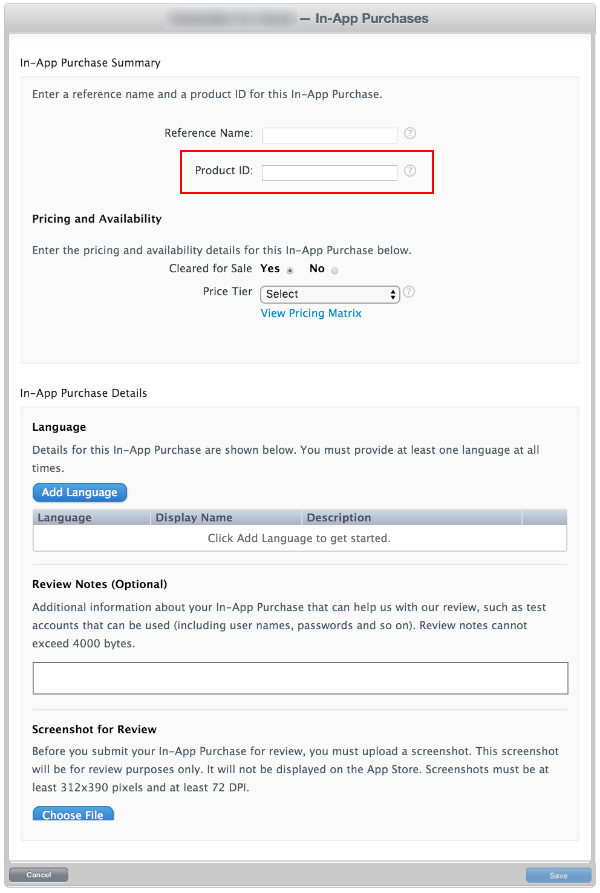
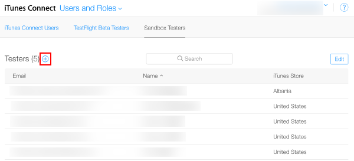

Note: The “Product ID” here is the same identifier used in the game source code, added to the Unity IAP ConfigurationBuilder instance by using AddProduct() or AddProducts().
Note: When targeting multiple Apple device groups (for example, shipping on both iOS and Mac) Apple requires usage of different, unique product identifiers for each distinct device group. Use Unity IAP’s Purchasing.IDs class and define a one-to-many mapping Product IDs to the store-specific identifiers, and pass that mapping in when initializing IAP.

结果：
测试 IAP
Create Sandbox Testers using iTunes Connect for use on your test device’s iTunes Account. To do this, go to iTunes Connect > Users and Roles, and choose the plus (“+”) button. You must review Apple’s Sandbox Tester documentation as there are several additional important usage notes, and you must use a real email address to create Testers.
Tip: To simplify managing the email address, use an email service capable of sub-addressing (emailaccount+subaddress@example.com) such as Gmail, iCloud, and Outlook.com. This allows one email account to receive email for multiple sub-addresses.

Complete the user creation wizard.
Build the Xcode project for your game by using Unity.
Note: Ensure the Bundle Identifier in Unity (Edit > Project Settings, then select the Other Settings category, and navigate to the Bundle Identifier section) matches that used in iTunes Connect.
In your game’s Xcode project, ensure the Team (Project Navigator > your game Target > General > Identity > Team) is set to that of your Apple Developer account.
对于 iOS
使用目标 iOS 设备来注销任何现有的 Apple ID 帐户。稍后仅在应用程序提示时再以沙盒测试者 (Sandbox Tester) 身份登录。任何后续购买都通过 Apple 沙盒 (Apple Sandbox) 而不是生产商店 (Production Store) 进行。
Build and run the game on your iOS device. UnityPurchasing.Initialize() succeeds if everything has been correctly configured.
在设备上通过游戏内进行购买来测试 IAP 是否成功。此过程会显示一个经过修改的购买对话框，其中说明正在沙盒环境中进行此购买。系统提示您购买时，请使用 Sandbox User Tester 密码。
Warning: If the indicator is not present, then an account is charged real money for the product.
对于 Mac
发布到 Mac 台式机时，请在 Unity 的 Mac Player 设置中选择 Mac App Store Validation。
After you have built your App, update its info.plist file with your bundle identifier and version strings. Right-click the .app file and select Show Package Contents, locate the info.plist file and update the CFBundleIdentifier string to your application’s bundle identifier.
Tip: To sign the bundle, you might first need to remove the Contents.meta file if it exists: your.app/Contents/Plugins/unitypurchasing.bundle/Contents.meta
codesign -f --deep -s "3rd Party Mac Developer Application: " your.app/Contents/Plugins/unitypurchasing.bundle
codesign -f --deep -s "3rd Party Mac Developer Application: " your.app
productbuild --component your.app /Applications --sign "3rd Party Mac Developer Installer: " your.pkg
To install the package correctly, delete the unpackaged .app file before you run the newly created package and install it.